바다는 무엇을 따라야 하는가 — 연재 3회
문화 ․ 생활
바다는 무엇을 따라야 하는가?Ⅲ
Maritime space follows something?Ⅲ
본 기고를 통해 해양공간환경의 구성에 있어 접근성(Accessibility), 정체성(Locality), 연계성(Linkage), 사용성(Mixed-Use)의 4가지 요소를 통해 작금에 이뤄지고 있는 디자인 트렌드들을 살펴보고 있습니다. 해양공간환경 조성에서 단순한 하나의 기능을 부여하는 것이 아니라 다양하고 효과적인 접근방법에 대한 고민이 가장 중요하며 또한 지역의 풍토성과 다양한 정체성을 반영하는 지역성의 중요함, 주변의 다양한 시설 및 기능들과 연결되는 연계성은 그 해양공간의 사용성을 극대화 할 것입니다. 마지막으로 다양한 사용주체를 포용하기 위한 복합사용의 적용을 사계절과 24시간 상관없이 그 공간이 적극적으로 활용되는데 중요한 역할을 수행하게 할 것입니다.
이번 기고에서는 항만 산업이 쇠락하면서 침체된 네르비온 강변을 예술과 문화, 업무 중심 공간으로 변화시킨 스페인 빌바오 네르비온 강변 프론트(Nervion Riverfront)재개발 프로젝트와 1992년 바르셀로나 올림픽을 계기로 올림픽 공원 동쪽의 벨 항 리노베이션, 올림픽 해안공원 등 대대적인 오픈 스페이스를 조성한 스페인 바르셀로나 포럼 워터프론트(Forum Waterfront) 프로젝트 그리고 덴마크의 수도 코펜하겐과 스웨덴 남서부 끝자락에 위치한 말뫼를 잇는 육상, 해저 복합운송로인 덴마크-스웨덴 말뫼 오레순트 브릿지(Oresund Bridge)를 해양 특수구조물의 사례로 살펴보고 런던 도크랜드 카나리 워프에 위치한 영국 런던 웨스트 인디아 콰이 브릿지(West India Quay Floating bridge)도 살펴보고자 합니다.
스페인 빌바오 네르비온 강변 프론트 재개발은 복합사용(Mixed-Use)에 관한 내용을 살펴볼 수 있고 스페인 바르셀로나 포럼 워터프론트 프로젝트는 정체성(Locality), 연계성(Linkage)에 관한 개발내용들을 말뫼 오레순트 브릿지 와 런던 웨스트 인디아 콰이 브릿지는 접근성(Accessibility)을 통해 해양공간환경을 개선시킨 내용들을 살펴 볼 수 있습니다.
1.스페인 빌바오 네르비온 강변 프론트(Nervion Riverfront)
스페인 네르비온 강은 빌바오 시내를 관통하면서 북 대서양으로 흐르는 스페인 북부의 강으로서 19세기까지는 인근도시들 운송중심의 주운도시(transportation by ship)로 성장했다. 네르비온강변 도시들은 15세기 이래 제철업과 조선업 중심으로 번성하게 되었으나 1980년대 들어 철강과 조선업, 항만 주운 산업 쇠락하면서 실업률이 30%까지 치솟았다. 네르비온 강변의 항만과 공업지대는 함께 침체되면서 도시 전반적으로 쇠락의 길을 걷게 되었으며 '슬럼의 도시'로 변해갔다.
1991년 '빌바오리아 2000'을 설립하고 재생전략 싱크탱크인 '빌바오 메트로폴리 30'도 설립하였다. 네르비온 주변도시의 130여개 민·관 단체가 총망라된 이 기구는 '문화산업 육성'을 네르비온강을 중심으로 도심 재개발의 핵심 전략으로 채택했다. 이에 도시의 재생을 위해 네르비온 강변 재개발 프로젝트를 시작하여 예술과 문화, 업무 중심 공간으로 변화를 시도하였다.
<그림 3> 에우스칼두나 브릿지 야경 < IMAGE : http://www.bilbaointernational.com/\>
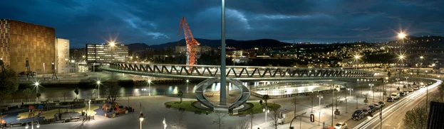
유명 건축가가 참여한 수준 높은 공공디자인과 수변접근성 향상을 위한 도로체계 및 공간구조 재편, 수위변화 대응 위해 상하 2단의 레벨 차 두고 강변 공간을 조성등을 진행하였다.
<그림 1> 빌바오 구겐하임 미술관 야경 < IMAGE : http://www.e-architect.co.uk/\>
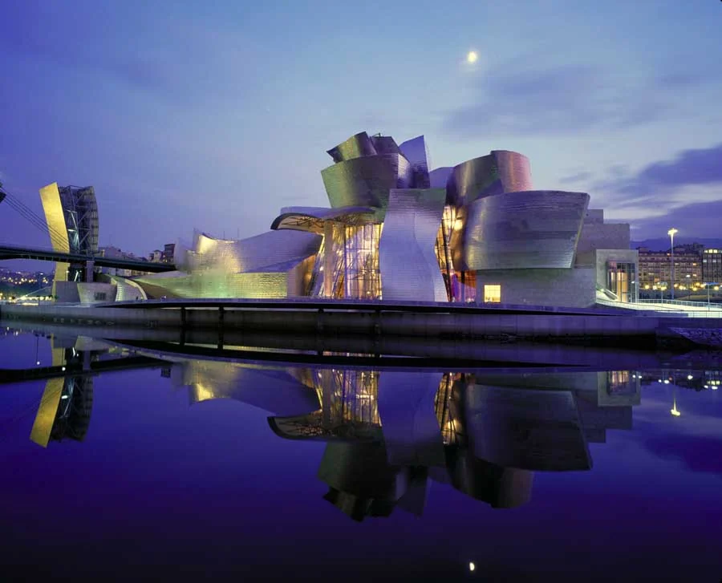
<그림 2> 네르비온 강변의 구겐하임 미술관 전경 < IMAGE : >
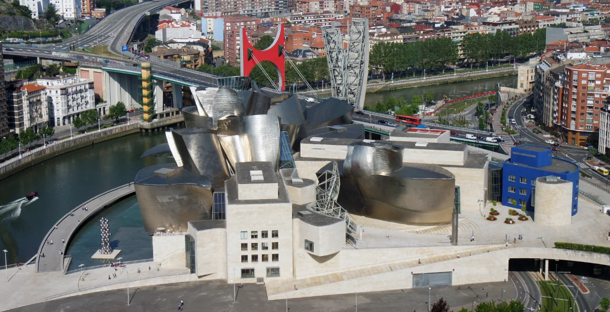
특히 프랭크 게리가 설계한 구겐하임 미술관은 이 지역의 핵심 프로젝트로 성공적 사례로 남게되었는데 네르비온 강변에 우뚝 선 이 건축물은 빛의 양과 보는 방향에 따라 반사된 빛에 의해 색이 다르게 보이는 독특한 외관을 지녔다. 구겐하임 미술관 그 자체는 거대한 건축예술작품이었고 1997년 개관과 동시에 전 세계의 주목을 받았다. 지금도 해마다 100만명이 넘는 관람객이 찾아오고 있으며 네르비온 강변 빌바오시 전체 인구의 3배 이며 현재는 누적 관람객 1000만명을 훌쩍 넘어섰다. 구겐하임 미술관을 통해 얻은 수익은 우리 돈으로 4600억원을 넘었으며 관람객들이 빌바오에 머물며 쓴 돈은 18억7900만 유로이며 이는 우리 돈으로 3조원이 넘는 액수다.
<그림 4> 에우스칼두나 브릿지 전경 < IMAGE : >
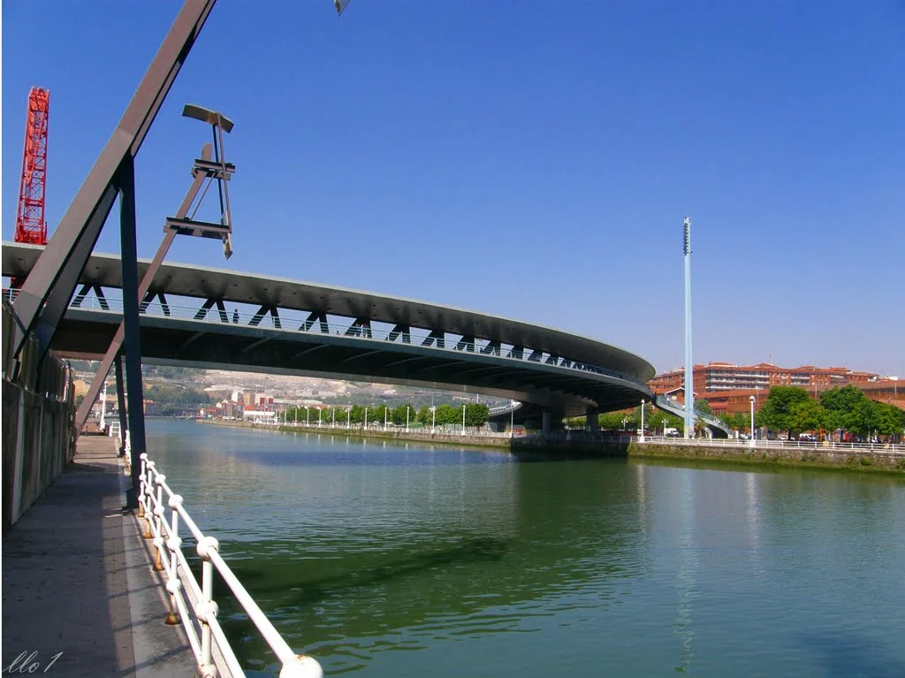
빌바오의 도심 재개발 사업은 중장기 마스트플랜에 따라 지하철 건설, 네르비온 강변과 도심 환경개선 등으로 구성되었으며 특히 네르비온 수변공간의 역사문화환경을 활용한 경관조성과 주리주비 다리 등의 교량등 기반시설에 대한 디자인 향상을 통한 수변 랜드마크 조성을 중심으로 진행하였고 이를 통해 네르비온 강변과 빌바오 도심에는 새로운 복합 문화가 재생되고 도시디자인차원에서는 이를 '구겐하임 효과'라는 용어로 가치를 인정하고 여러 수변도시 재생사업에서 벤치마킹 대상으로 삼고 있다.
<그림 5> 파드레 아루페 다리 < IMAGE : http://www.bilbaointernational.com/ >
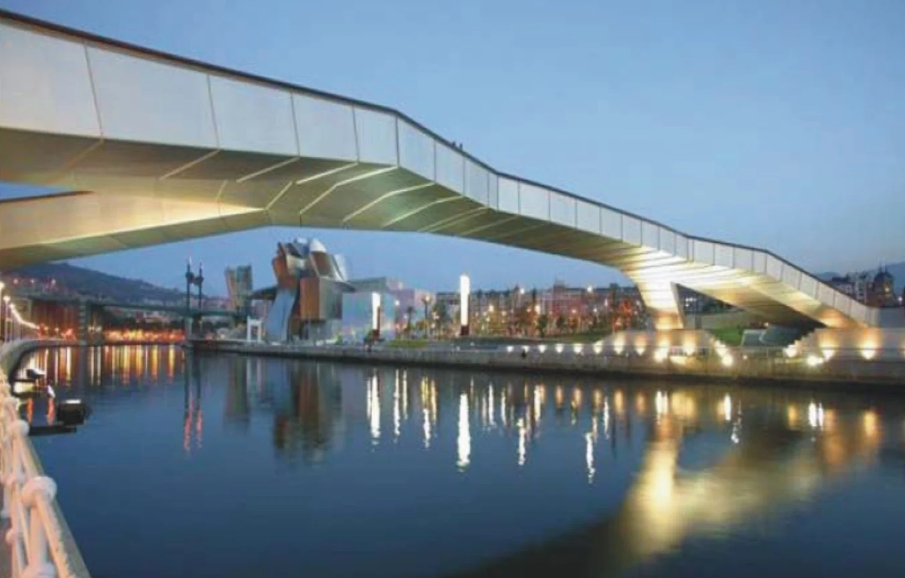
<그림 6> 파드레 아루페 다리 < IMAGE : www.puentemania.com >
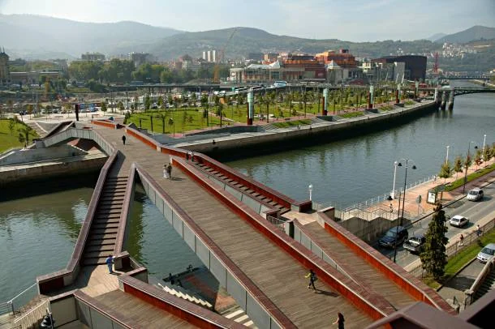
<그림 7> 주리주비 다리 < IMAGE : www.flickr.com >
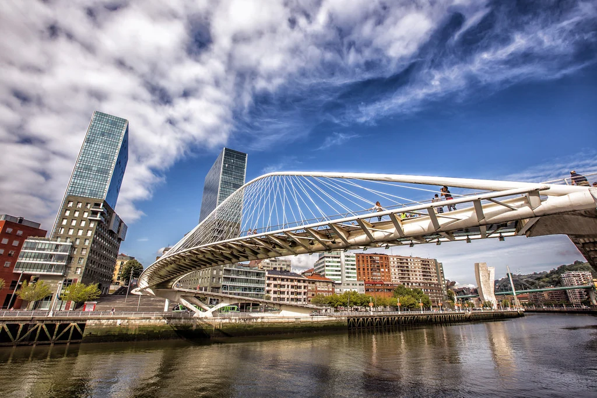
<그림 7> 주리주비 다리 < IMAGE : www.goista.com >
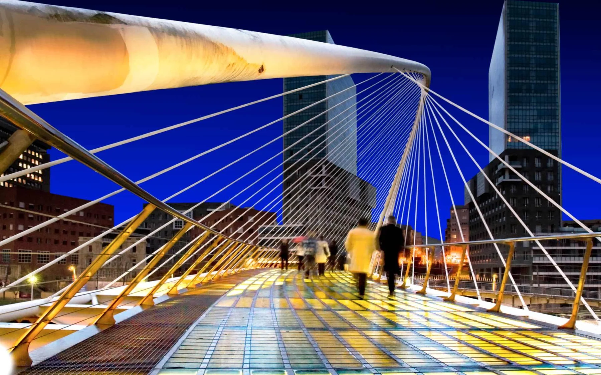
2.스페인 바르셀로나 포럼 워터프론트(Forum Waterfront)
<그림 10> 포럼 워터프론트 연결 보행로 < IMAGE : >
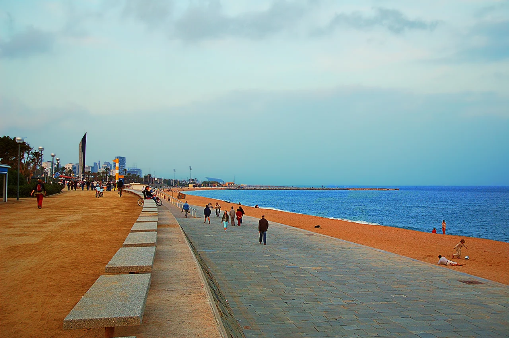
스페인의 바르셀로나는 1980년대 초부터 공공공간 조성이 증가했으며 1992년 바르셀로나 올림픽이 결정적 계기가 되어 도시 전반적인 공간환경의 개선과 재생이 이뤄졌으며 특히 해안가를 중심으로 하는 수변공간의 재생이 활발히 진행되있다. 특히 몬주익 올림픽 공원과 올림픽 공원 동쪽의 벨 항 리노베이션, 올림픽 해안공원 등 대대적인 수변 오픈 스페이스 조성은 2004년 바르셀로나 국제문화 포럼을 계기로 활발히 재개되었다.
<그림 9> 포럼 워터프론트 전경 < IMAGE : fluidworkstudio.wordpress.com >
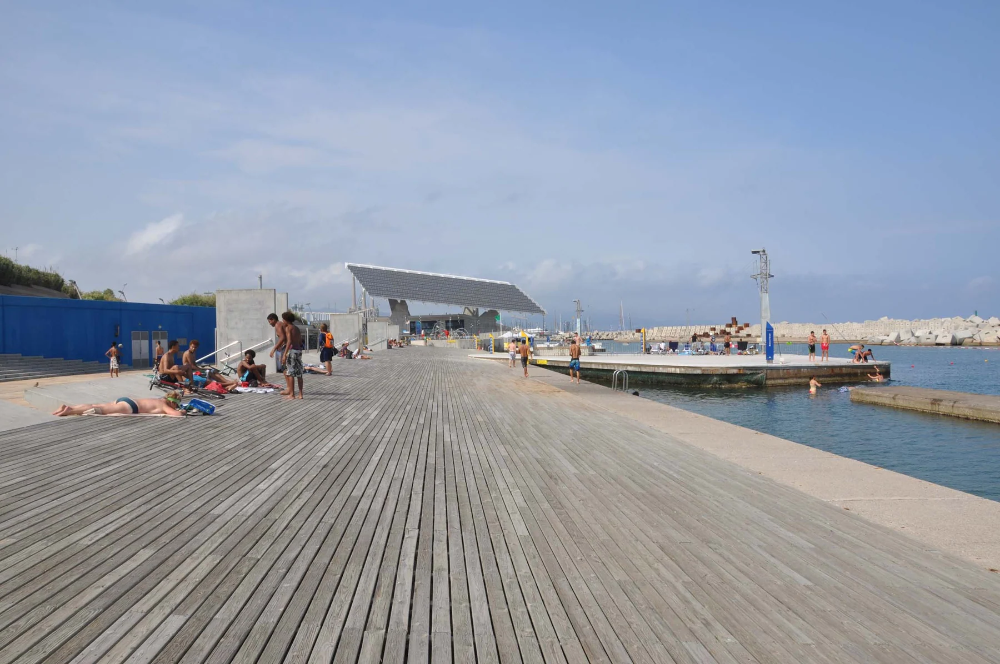
<그림 8> 포럼 워터프론트 전경 < IMAGE : www.inexhibit.com >
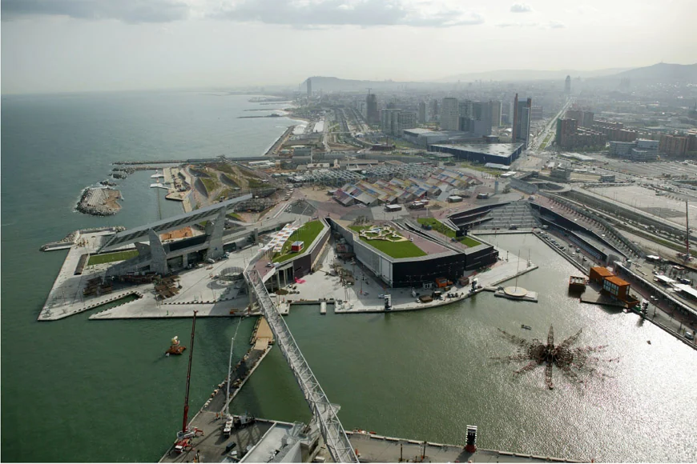
포럼 워터프론트는 포럼 수변광장, 콘크리트 해수욕장, 북동 해안공원, 남서 해안공원으로 구성되어 있으며 4개의 수변 공간은 폭 40m, 길이 1.5km의 보행몰을 통해 남서쪽 바르셀로나 벨 항과 연결된다. 또한 포럼 수변광장 확보 위해 기존 해안선 일부를 매립, 해안고속도로와 기존 하수처리장을 지하화하였으며 데크 광장의 입체화로 생겨난 바다쪽으로의 17m 단 차이는 램프와 스탠드로 처리하였다.
<그림 11> 포럼 워터프론트 태양광 쉘터 < IMAGE : www.greenbusinesswatch.co.uk\>
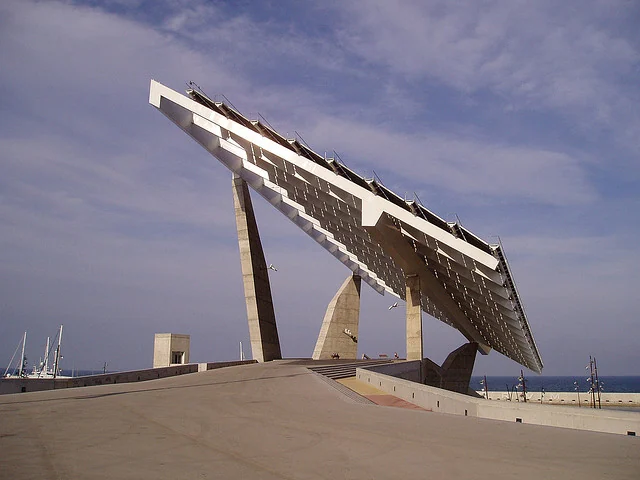
광장이 해안과 맞닿은 위치에 4,500㎡ 면적의 태양열 집열판이 설치된 대형 콘크리트 '솔라 파골라' 가 위치해 있으며 444kw의 전력을 생산하며 그늘을 제공함과 동시에 전망대 역할을 한다.
3.덴마크-스웨덴 말뫼 오레순트 브릿지(Oresund Bridge)
<그림 14> 인공섬 페레홀름 < IMAGE : >
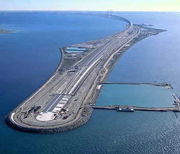
말뫼 오레순트 브릿지덴는 덴마크의 수도 코펜하겐과 스웨덴 남서부 끝자락에 위치한 말뫼를 잇는 육상, 해저 복합운송로로서 총길이 16km, 총공사비 37억 달러 공사기간 7년이 소요되어 2000년 완공된 해양 구조물이다.
<그림 12> 말뫼 오레순트 브릿지 전경 < IMAGE : >
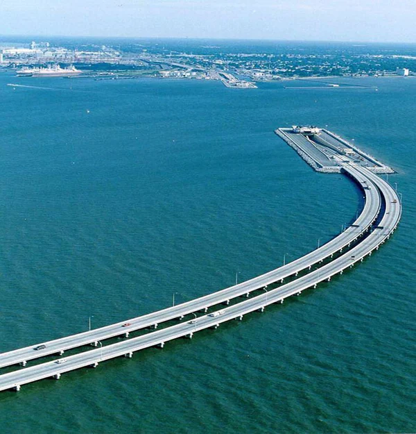
<그림 13> 말뫼 오레순트 브릿지 배치도 < IMAGE : www.beyondplanb.eu\>
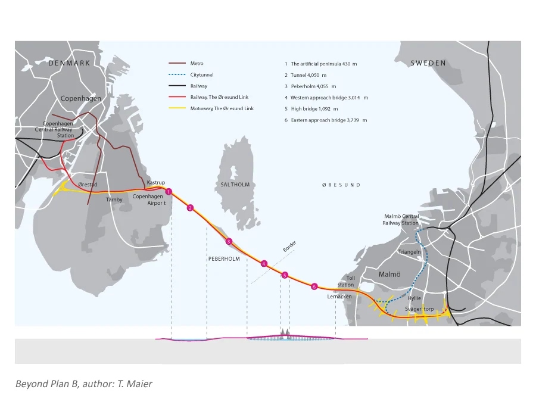
바다 한 가운데 길이 4km의 '페베홀름'이라는 인공섬을 조성하여 이 섬을 중심으로 말뫼 쪽으로는 자동차 전용도로(길이 7.8km, 왕복 4차선)와 철로가 위아래로 설계된 2층짜리 다리가 건설돼 있고, 코펜하겐 쪽으로는 왕복철로와 왕복 2차선 도로가 건설된 해저터널이 연결되어 있다.
<그림 15> 말뫼 오레순트 브릿지 전경 < IMAGE : http://wikimapia.org/\>
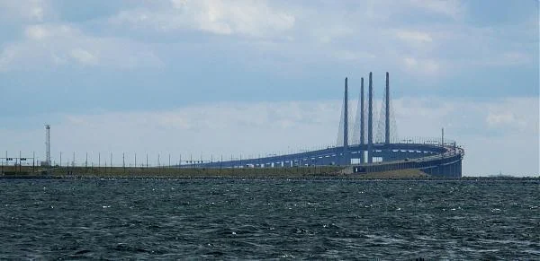
스웨덴 말뫼에서 자동차나 기차로 육상다리를 이용, 인공섬에 도착한 뒤 그 다음부터는 해저 터널을 이용하여 코펜하겐(남단)에 이르는 교통로로서 덴마크는 4km에 달하는 해저터널을 조성하였다.
4.영국 런던 웨스트 인디아 콰이 브릿지(West India Quay Floating bridge)
<그림 16> 웨스트 인디아 콰이 브릿지 전경 < IMAGE : http://wikimapia.org/\>
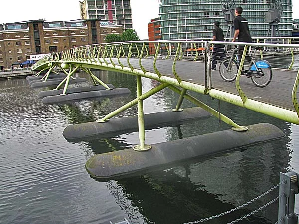
<그림 18> 웨스트 인디아 콰이 브릿지 야경 < IMAGE : www.telegraph.co.uk\>
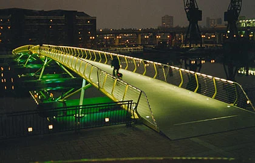
<그림 19> 웨스트 인디아 콰이 브릿지 야경 < IMAGE : >
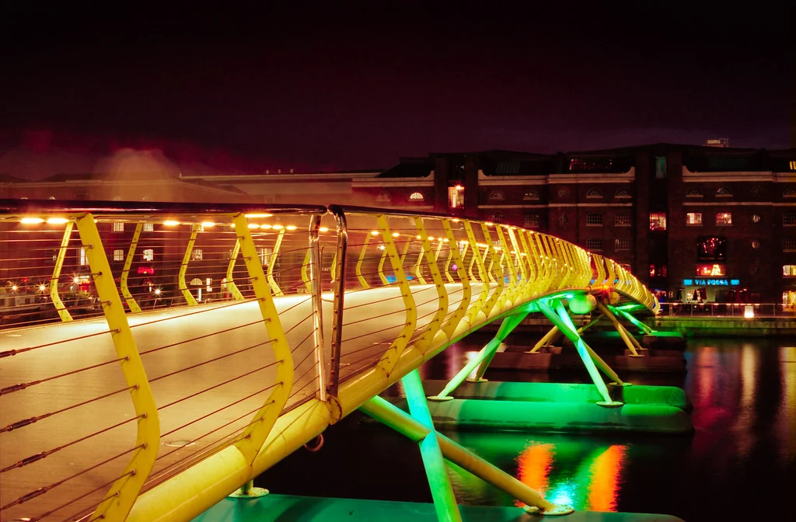
<그림 17> 웨스트 인디아 콰이 브릿지 전경 < IMAGE : >
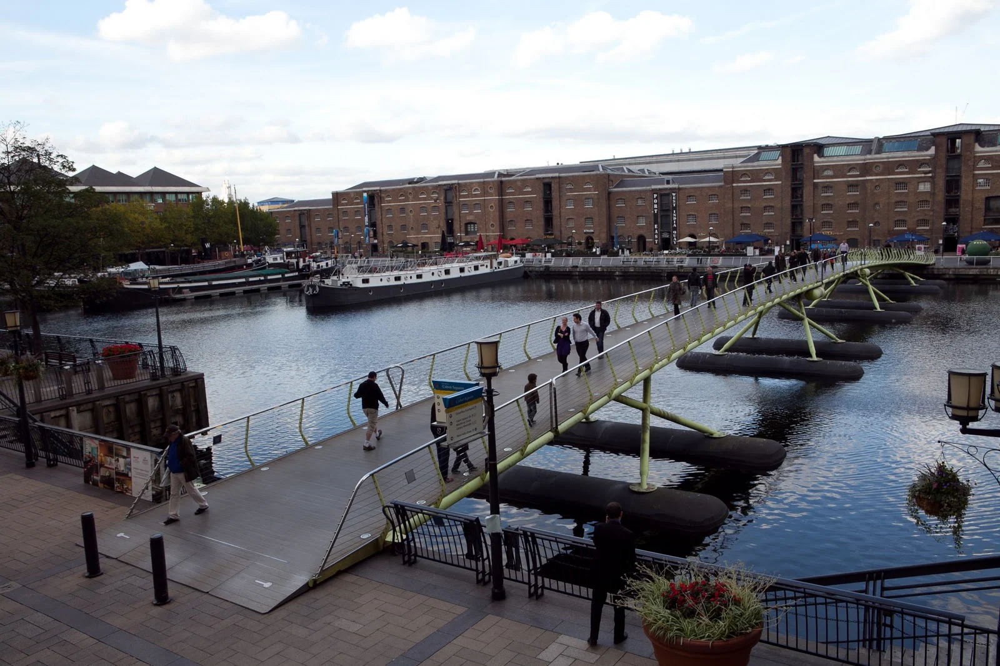
웨스트 인디아 콰이 브릿지는 런던 도크랜드 카나리 워프에 위치한 1996년 Future Systems에 의해 설계된 94m 길이의 조립식 교량 구조체이다. 단 기간 내 설치를 위하여 폰툰 구조의 스틸 재료 사용, 조립식으로 이루어져 있으며 색상과 조명 디자인이 우수하여 1998년 영국 건설 산업상등 다수의 건설 디자인 관련상을 수상하였다.
웨스트 인디아 콰이 브릿지는 물의 양이 상승함에 따라 교량 높이도 자연스럽게 상승하는 부교 형식으로 디자인 되어 있으며 연못 위에 떠다니는 곤충 형상으로 비유되기도 한다. 카나리 워프의 공공공간의 연계 역할은 물론 수변경관을 연출하는데 중요한 디자인적 랜드마크 역할을 수행하고 있다.
[참고문헌]
국토해양부외, ｢해양 공간의 가치 창출을 위한 해양디자인기술 개발 기획연구｣, 2012
이현성외, ｢해양공간디자인｣, 미세움, 2013.
2016년 봄호
1
항 만
2